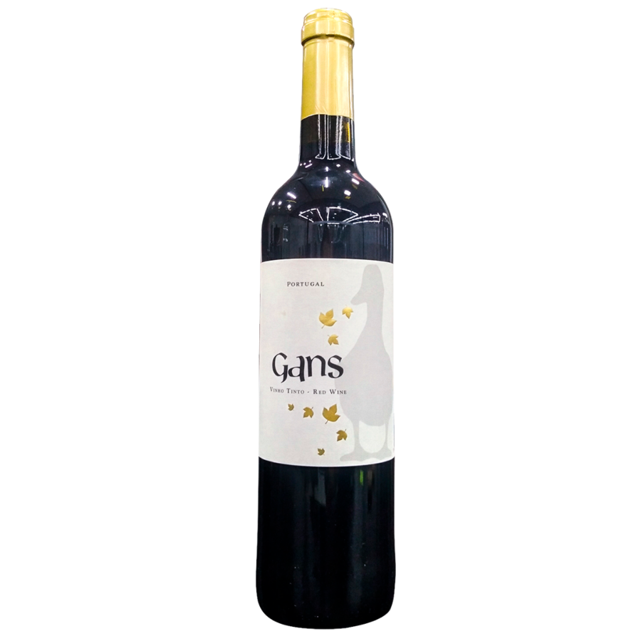
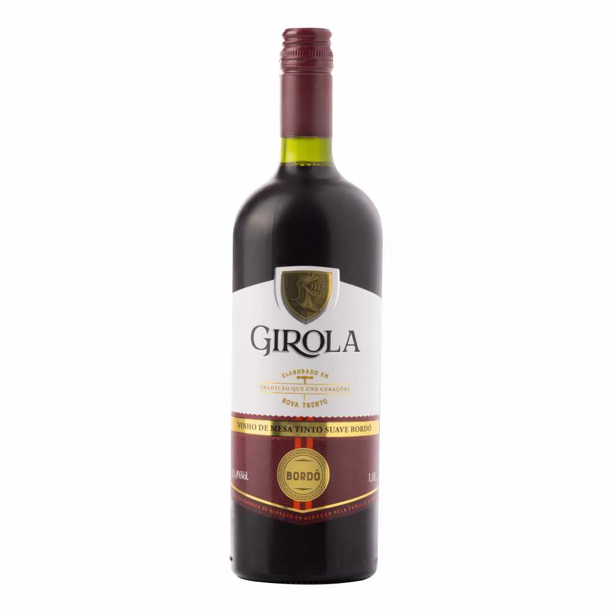
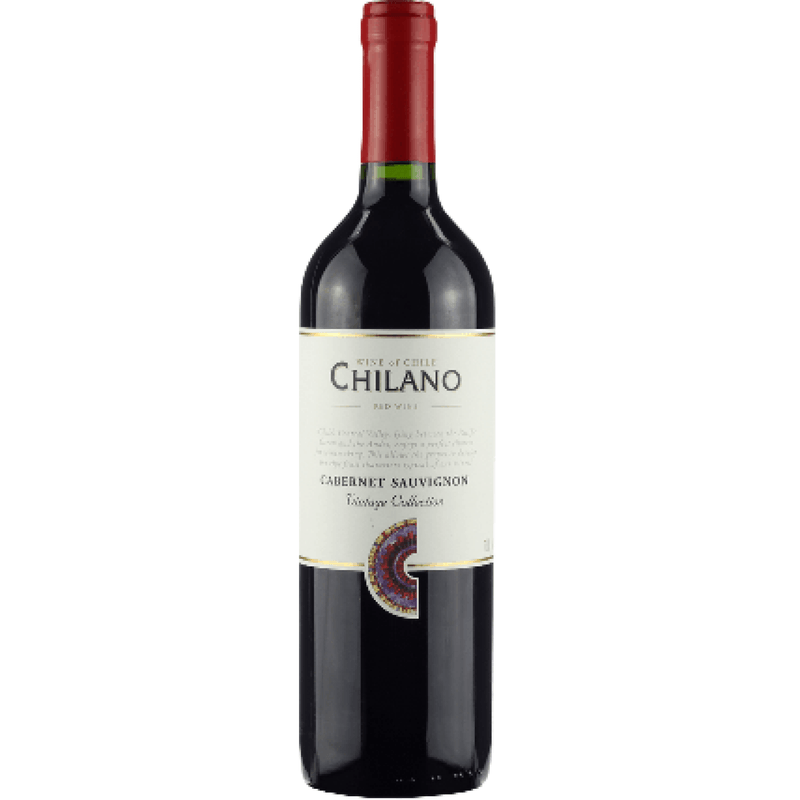
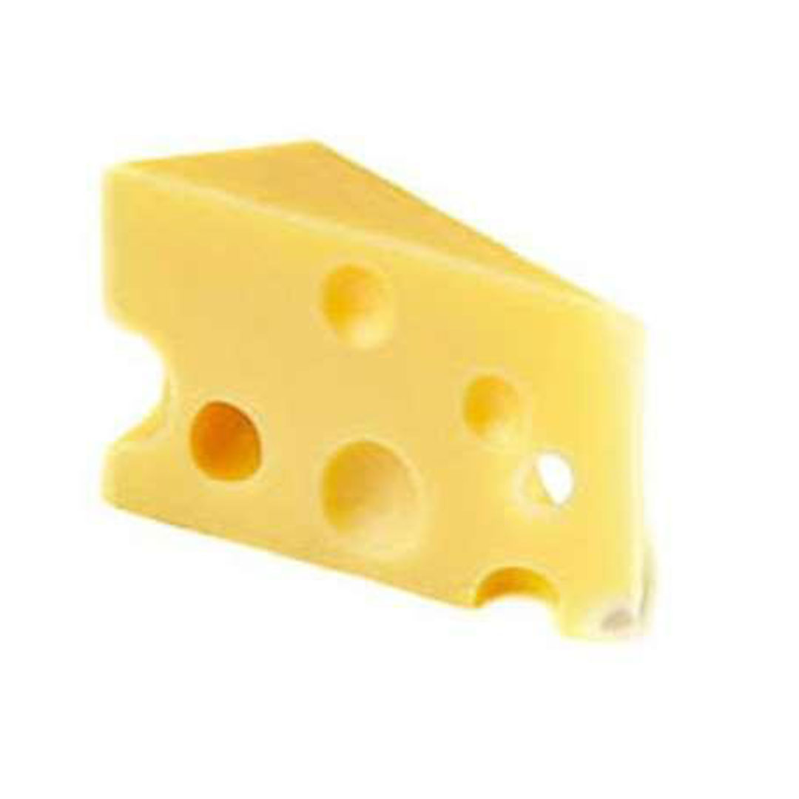

Vinhos
Vinho Português Gans Tinto - 750ml

Informações
Sabor: aroma de frutos silvestres, equilibrado e final de boca suave e refinado.
Acompanhamentos: Este magnífico Vinho Tinto é uma escolha perfeita para acompanhar uma variedade de pratos, sejam eles de carne, peixe ou massas.
Preço: R$83,60
Vinho de Mesa Girola Tinto Bordô - 1L

Informações
Sabor: Seu sabor vivo, agradável, com boa estrutura, apresenta taninos discretos, acidez equilibrada e doce na medida certa.
Acompanhamentos: Massas em geral a base de molho vermelho e pizza.
Preço: R$17,90
Vinho Tinto Chilano Cabernet Sauvignon - 750ml

Informações
Sabor: O paladar é uma harmonia perfeita, combinando bom corpo, taninos maduros e acidez equilibrada.
Acompanhamentos: Carnes vermelhas, queijos e massas com molho vermelho.
Preço: R$49,90
Queijos
Queijo Gruyere - 300G

Informações
Sabor: No primeiro momento frutado, mas em seguida percebe-se um sabor de nozes.
Acompanhamentos: Pode ser usado em sanduíches, no fondue suíço junto com o emental, gratinados. Harmoniza com vinhos tintos leves e bem frutados.
Preço: R$83,60